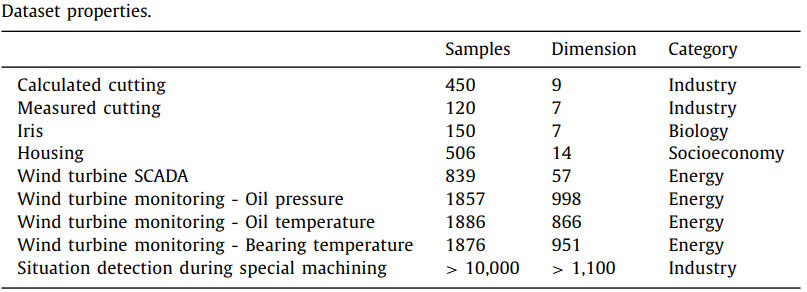
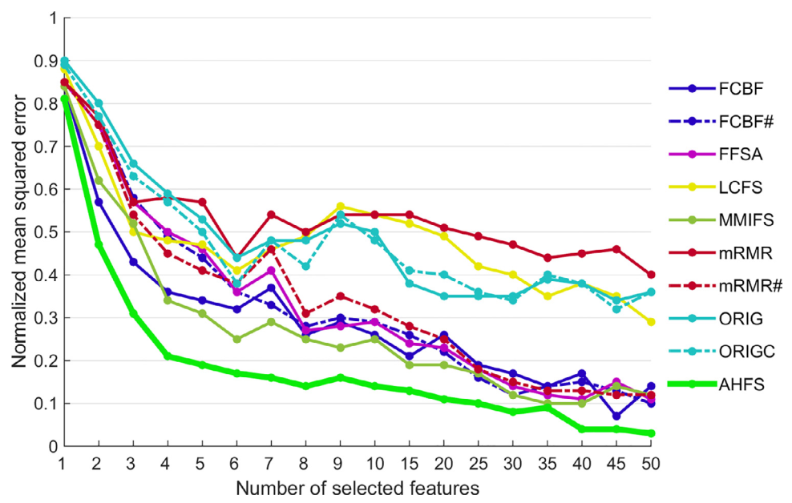

Zsolt János Viharos, Krisztián Balázs Kis, Ádám Fodor, Máté István Büki
This paper deals with the problem of integrating the most suitable feature selection methods for a given problem in order to achieve the best feature order. A new, adaptive and hybrid feature selection approach is proposed, which combines and utilizes multiple individual methods in order to achieve a more generalized solution. Various state-of-the-art feature selection methods are presented in detail with examples of their applications and an exhaustive evaluation is conducted to measure and compare the their performance with the proposed approach. Results prove that while the individual feature selection methods may perform with high variety on the test cases, the combined algorithm steadily provides noticeably better solution.
The proposed algorithm combines different feature selection methods by allowing each algorithm to suggest the next potential best feature in the sequential forward selection process. This concept is independent of the search method being used. The algorithm utilizes a forward selection technique with a sequential search strategy to find the best feature subset/order. The termination criterion is reaching a predetermined subset size, which can be specified by a human expert.
The algorithm consists of two important phases:
There are various applied test cases, the UCI machine learning repository is the probably most frequently applied by the Artificial Intelligence/Machine Learning community. Iris as the most frequently used, well-known dataset was selected for having as one of the first classification test assignment. For regression oriented tests another dataset named Housing (also named as Boston) was selected as a public benchmark case. In order for having noise free dataset together with also noisy data from the same domain Calculated cutting and Measured cutting is applied, respectively. Wind turbine monitoring and Situation detection during special machining are test cases for higher data amount and for high data complexity/variety, with various levels of noisy data, incorporating party redundancy, high non-linearity, outliers, non-uniform data distribution and many other disturbing, industrial real-life effects.
The figure shows the average of the individual feature selection performances measured on each assignment. Each line describes the performance of a single, individual feature selection method, where the x axis shows the number of features used for building the model and the y axis shows the normalized model error. The overall performance diagram mirrors, that the proposed algorithm significantly outperforms the individual methods in general. Furthermore, the biggest difference reveals itself in the case of the first 4 to 25 selected features which means that the new method finds the most important features earlier than the other methods
All in all, the proposed AHFS algorithm already proved to be superior to other state-of-the-art feature selection methods for the reasons that, 1) it is significantly less sensitive to the varying properties of the dataset it is applied to, and 2) it provides a significantly better feature order for model building.
If you found our research helpful or influential please consider citing:
@article{VIHAROS2021107932,
author = {Zsolt János Viharos and Krisztián Balázs Kis and Ádám Fodor and Máté István Büki},
title = {Adaptive, Hybrid Feature Selection (AHFS)},
journal = {Pattern Recognition},
volume = {116},
pages = {107932},
year = {2021},
issn = {0031-3203},
doi = {https://doi.org/10.1016/j.patcog.2021.107932},
url = {https://www.sciencedirect.com/science/article/pii/S0031320321001199}
}